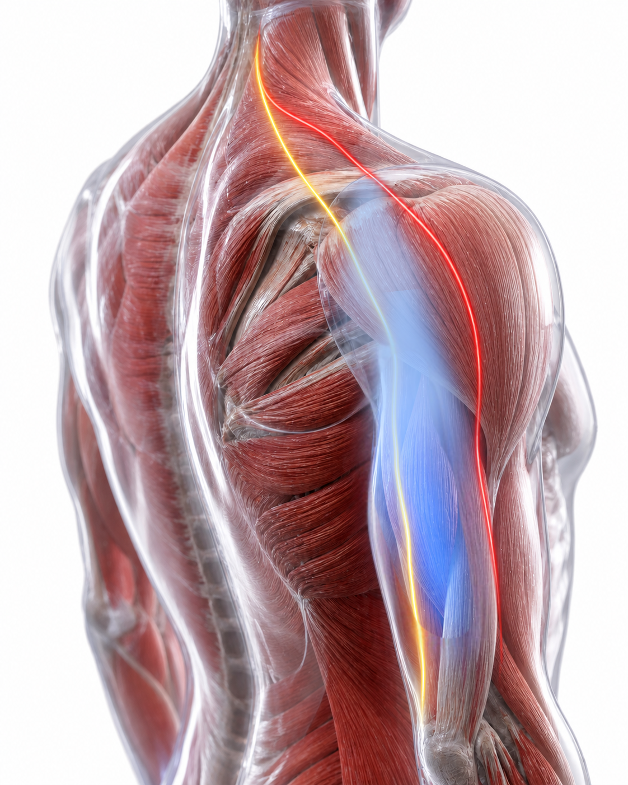

BELANGRIJK: Dit document bevat persoonlijke observaties en zelf-testen van de patiënt. Het is uitsluitend bedoeld als indicatieve leidraad voor een medisch consult. De beschreven termen en conclusies zijn subjectief en dienen door een arts te worden gevalideerd.
Observatie Verslag
Patiënt: Man, 65j
1. Kern van de klacht
Pijnloze "onmacht" in de rechterbovenarm bij het gestrekt heffen van gewichten.

Blauwe zone: zwakte | Lijnen: uitstraling vanuit nek
2. Krachttest (Gestrekte arm)
| Gewicht | Links | Rechts |
|---|
| 5 kg | OK | Geen kracht |
| 3 kg | OK | Geen kracht |
| 2 kg | OK | Moeizaam |
* Biceps en grijpkracht zijn in beide armen gelijk en goed.
3. Belangrijkste observaties
- Nek-reactie: Uiterste rotatie van de nek naar rechts geeft een trekkend gevoel naar de schouderkop (buitenkant).
- Mobiliteit: Rechterhand kan minder ver achter de rug bewegen dan de linkerhand.
- Locatie: Zwakte concentreert zich op de schouderkop (M. Deltoideus) en achterzijde arm.
4. Mogelijke aanknopingspunten
- Cervicale Radiculopathie (C5/C6)
- Nervus Axillaris neuropathie
- Rotator cuff problematiek